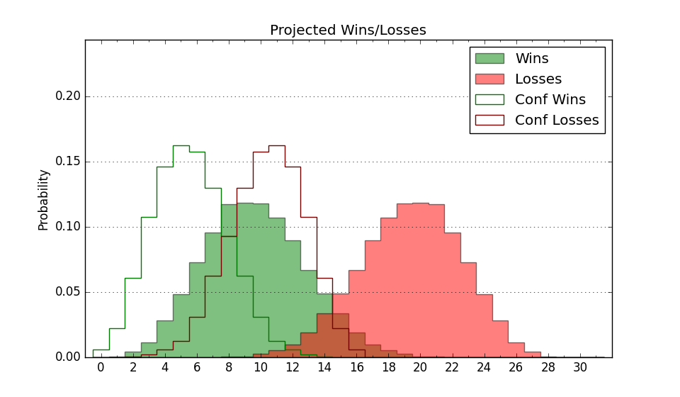

| Home | Game Probabilities | Conferences | Preseason Predictions | Odds Charts | NCAA Tournament |
| City: | Clinton, South Carolina | |
| Conference: | Big South (1st)
| |
| Record: | 0-0 (Conf) 1-3 (Overall) | |
| Ratings: | Comp.: -12.4 (296th) Net: -13.0 (276th) Off: 112.8 (75th) Def: 125.9 (355th) SoR: 0.1 (245th) |
| Remaining | ||||||
|---|---|---|---|---|---|---|
| Date | Opponent | Win Prob | Pred. | |||
| 11/21 | @ Stephen F. Austin (170) | 16.1% | L 66-77 | |||
| 11/22 | (N) Youngstown St. (214) | 33.1% | L 74-79 | |||
| 11/23 | (N) Monmouth (272) | 44.1% | L 76-78 | |||
| 11/27 | @ Tennessee Tech (285) | 32.2% | L 71-77 | |||
| 12/3 | @ Florida A&M (343) | 47.4% | L 73-74 | |||
| 12/11 | Columbia (219) | 48.8% | L 78-79 | |||
| 12/15 | @ Miami FL (36) | 2.6% | L 65-90 | |||
| 12/21 | Manhattan (322) | 70.4% | W 77-71 | |||
| 12/30 | @ South Carolina (82) | 5.9% | L 64-82 | |||
| 1/2 | Longwood (195) | 44.5% | L 70-71 | |||
| 1/4 | @ Gardner Webb (130) | 11.4% | L 68-82 | |||
| 1/8 | @ USC Upstate (326) | 43.0% | L 77-79 | |||
| 1/11 | UNC Asheville (206) | 46.7% | L 75-76 | |||
| 1/18 | @ High Point (110) | 9.0% | L 70-86 | |||
| 1/22 | Charleston Southern (266) | 58.0% | W 75-73 | |||
| 1/25 | Radford (242) | 53.2% | W 78-77 | |||
| 1/29 | @ Winthrop (165) | 15.1% | L 70-82 | |||
| 2/1 | High Point (110) | 25.2% | L 74-82 | |||
| 2/5 | USC Upstate (326) | 72.0% | W 81-75 | |||
| 2/12 | @ Charleston Southern (266) | 28.9% | L 71-77 | |||
| 2/15 | @ Longwood (195) | 19.0% | L 66-76 | |||
| 2/19 | Winthrop (165) | 37.8% | L 74-78 | |||
| 2/22 | @ Radford (242) | 25.0% | L 74-81 | |||
| 2/26 | @ UNC Asheville (206) | 20.5% | L 71-81 | |||
| 3/1 | Gardner Webb (130) | 30.5% | L 72-78 | |||
| Previous | Game Score | |||||
| Date | Opponent | Win Prob | Result | Off | Def | Net |
| 11/4 | @Charlotte (138) | 12.1% | L 79-88 | 27.6 | -17.7 | 9.9 |
| 11/8 | @North Carolina St. (73) | 4.8% | L 72-81 | 12.1 | 3.4 | 15.6 |
| 11/13 | Wofford (172) | 40.0% | W 71-68 | -0.1 | 6.8 | 6.6 |
| 11/16 | @Kennesaw St. (248) | 26.1% | L 67-85 | -5.2 | -7.1 | -12.3 |
| Stats & Trends | |||||
|---|---|---|---|---|---|
| Current | Day | Week | Month | Season | |
| Composite | -12.4 | +0.4 | -1.3 | -0.3 | -0.3 |
| Comp Rank | 296 | +9 | -15 | +3 | +3 |
| Net Efficiency | -13.0 | +1.4 | -11.2 | -- | -- |
| Net Rank | 276 | +14 | -94 | -- | -- |
| Off Efficiency | 112.8 | +4.7 | +1.0 | -- | -- |
| Off Rank | 75 | +48 | +33 | -- | -- |
| Def Efficiency | 125.9 | -3.2 | -12.2 | -- | -- |
| Def Rank | 355 | -5 | -77 | -- | -- |
| SoS Rank | 121 | +7 | -57 | -- | -- |
| Exp. Wins | 9.7 | +0.0 | -0.6 | -0.5 | -0.5 |
| Exp. Conf Wins | 5.6 | +0.1 | -0.7 | -0.6 | -0.6 |
| Conf Champ Prob | 1.1 | +0.2 | -0.7 | -1.3 | -1.3 |

| Advanced Stats | ||
|---|---|---|
| Stat | Value | Rank |
| Off Eff FG % | 0.601 | 24 |
| Off Ast Ratio | 0.147 | 157 |
| Off ORB% | 0.283 | 179 |
| Off TO Rate | 0.153 | 184 |
| Off FT Ratio | 0.262 | 300 |
| Def Eff FG % | 0.621 | 352 |
| Def Ast Ratio | 0.171 | 315 |
| Def ORB% | 0.275 | 159 |
| Def TO Rate | 0.110 | 337 |
| Def FT Ratio | 0.322 | 148 |